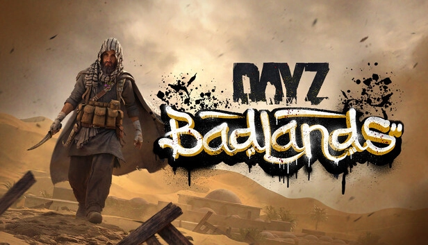
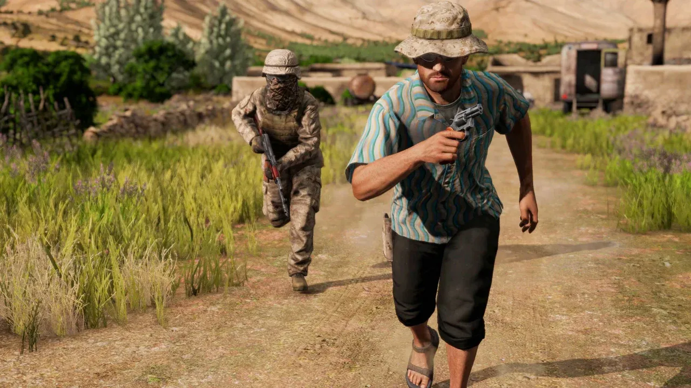
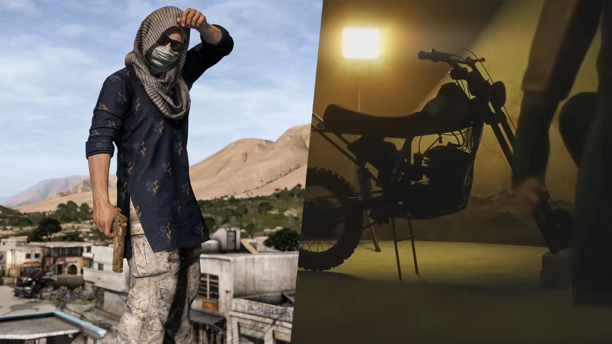

The new Dayz Badlands Dlc expansion has everyone talking, from long time players to new players alike.
Similar to the Livonia Map, you spawn on the northside and work your way south for better loot.
Key points of interest include the Marek Barq hydroelectric plant on the top left, Qalat-e Lut in the middle
of the desert, and more than three southern locations with hidden, timed dynamic bunkers.
The first map to ever come out as a mod was the famous Chernarus map. It was
one-of-a-kind for its time, having a massive reach and size of 225 square kilometers.
This makes sprinting from one side of the map to the other take about 60 to 90 minutes.
That is, if you ran it straight without food or water stops. With 10km of forests,
50km of towns and villages, and a whopping 350km of roads, it is no wonder why
people are so hard to find. It features an expansive amount of towns and, most
importantly, more than three military hot zones. This map makes anyone disappear..
Release of livonia was on on December 3, 2019, offering a completely different map
size compared to what players were used to. The developers wanted to make running into
players more common and did that by making the new map 163 square kilometers
(63.3square miles). Not only did they make the map smaller, but they also designed
it as a dense wilderness experience with minimal towns. It was the first official
DayZ map to host an underground bunker that required a keycard to enter. With vast,
dense forests and less ocean, this gave the community a big surprise, as you will
almost always run into someone on a full server—something the DayZ community was not
used to.
Sakhal was the second to last map released, and it is even smaller than Livonia. The map is
dedicated to extreme survival players, offering a full-blown sub-arctic survival and
PvP experience. The Frostline expansion was released on October 15, 2024, for all
console and PC players. It features a massive 83x83 sqkm sub-arctic archipelago that
brings harsh snowstorms, new wildlife, and different environmental hazards to the
game.
DayZ Badlands



When does DayZ Badlands come out,
October 15th 2026.
(1.29) dayz update roadmap can be found on almost all of the wobo sites.
From how to make a fire in the dayz badlands map to any other map that you may want
to learn about wobo is the guy you want to look up.This standalone Map can make or
have deadly tempratures. The DayZ Badlands map is releasing this year!
To prepare for that map, we have made the summer on this map mimick
the Miami,FL area. If you get too hot, change clothes. You can also go
into the water for a quick cooldown. DayZ Badlands is set to release in october, we finally
have a release date! Good Luck out there in the heat survivors!